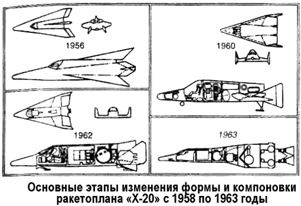
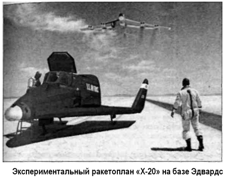

Разработка и испытания «Х-20»
Этап разработки и проектирования аппарата «Дайна-Сор» занял почти два года. Конструкторы перебрали несметное число компоновочных решений. Был учрежден специальный комитет, известный как «Группа Альфа» (по названию фазы программы — «Альфа»), предназначенный для сравнения технических данных и проектов, касающихся узлов и систем орбитального аппарата «Дайна-Сор».
Аппарат, который в конечном счете появился на свет, имел куда большее сходство с проектом, предложенным когда-то группой «Белл-Мартин», чем тот, который обещали построить победители конкурса из группы «Боинг-Воут». Он состоял из дельтовидного крыла (размах крыла — 6,22 метра, площадь — 32,05 м2) с двумя концевыми шайбами вертикальных стабилизаторов и из фюзеляжа (длина — 10,77 метра, базовый диаметр — 1,6 метра) со слегка приподнятой и закругленной на конце носовой частью. Он был изготовлен большей частью из экзотического сплава «Rene-41», а снизу покрыт тепловым экраном из молибдена. Испытания установили, что экран обеспечивает защиту для аппарата массой около 4500 килограммов до температуры нагрева в 1500 °C.
Передние кромки крыла должны были закрываться сегментами из сплава молибдена, которые могли выдерживать температуры до 1650 °C. Отдельные места аппарата, которые при входе в атмосферу нагревались до 2000 °C или выше, могли быть защищены армированным графитом и циркониевым полусферическим колпаком в носовой части фюзеляжа.
Планер имел «пустую» массу 4912 килограммов, а при полной комплектации — 5167 килограммов.
В начале 1960 года ВВС объявили о проведении ряда испытаний по отработке процесса входа в атмосферу с использованием многоразового носового конуса «RVX-2» (Прототип «RVX-1» был первым носовым конусом межконтинентальной баллистической ракеты с абляционной защитой). Экспериментальный аппарат «RVX-2» планировалось запустить при помощи МБР «Атлас» со скоростью около 22 Махов для изучения состояния критического нагрева и аэродинамики. К сожалению, позднее полеты «RVX-2» были отменены из-за очередных сокращений финансирования.
Претерпела изменения и вся программа «Дайна-Сор».
Новый план разработки, выпущенный 1 апреля 1960 года, был теперь направлен к достижению четырех основных целей: определение зон максимального нагрева на корпусе аппарата во время входа в атмосферу, исследование маневренности во время входа в атмосферу, демонстрация методов обычной горизонтальной посадки, оценка способности человека успешно работать в течение длительного гиперзвукового полета.
Согласно наново составленному графику, начиная с июля 1963 года, необходимо было выполнить 20 воздушных запусков прототипа на скоростях до 2 Махов с использованием ракетного двигателя «XLR-11». Впоследствии, когда была создана тормозная двигательная установка, выяснилось, что ее модифицированный вариант может легко заменить «XLR-11».
Второй этап программы теперь был разделен на два «шага»: на «Шаг 2А», предназначенный для сбора данных относительно маневрирования с орбитальными скоростями и работы военных подсистем, и на «Шаг 2Б», целью которого было создание «промежуточной» действующей системы, способной к выполнению орбитальной разведки и инспекции спутников.
Цель третьего этапа осталась без изменений. Программа должна была завершиться в конце 1971 года созданием полнофункциональной боевой системы «ДайнаМОВС» («Dyna-MOWS» от «Manned Orbital Weapons System» — «Пилотируемая орбитальная система оружия»).
Казалось бы, все шаги и этапы программы «Дайна-сор» определены, а роли расписаны, но межведомственная конкуренция и амбиции отдельных участников не давали ей принять окончательную форму.
Так, 19 мая 1961 года Управление космических систем ВВС объявило собственную программу создания пилотируемого космического корабля «Сайнт-2» («SAINT II» от «Satellite Inspector» — «Спутник-Инспектор»). «Сайнт-2» являлся развитием проекта «Сайнт-1» («SAINT I» — беспилотная орбитальная система, способная идентифицировать и уничтожать вражеские спутники), отмененного в середине 1961 года, и представлял собой двухместный аппарат с грузовым отсеком и двигателем маневрирования, позволяющим осуществить посадку в заранее определенном месте.
«Сайнт-2» должен был запускаться на орбиту при помощи ракеты-носителя «Титан II», снабженной дополнительной разгонной ступенью, названной «Shariot» («Колесница») и работающей на высокоэнергетическом топливе «жидкий фтор-гидразин». В рамках этой «альтернативной» программы были запланированы 12 орбитальных испытательных полетов: первый беспилотный должен был состояться в начале 1964 года, а первый пилотируемый — в конце того же года Должностные лица из Управления космических систем назвали несколько причин, по которым ракетоплан «Дайна-Сор» не мог выполнять военные задачи, предназначенные для «Сайнт-2». Во-первых, у аппарата «Дайна-Сор» имелись серьезные ограничения по полезному грузу; во-вторых, он не был способен работать на высоких околоземных орбитах; в-третьих, скорость входа аппарата «Дайна-Сор» в атмосферу не могла быть значительно увеличена из-за температурных ограничений материала. Невзирая на все эти интриги и пертурбации, к лету 1961 года фирма «Боинг» достигла значительных успехов в создании начального варианта аппарата «Дайна-Сор». Продвигались исследования формы в аэродинамических трубах, шли испытания материалов и подсистем. Полноразмерный макет был готов и представлен заказчику 11 сентября 1961 года Поскольку масса планера «Дайна-Сор» в ходе его доработки несколько увеличивалась, ракету-носитель «Титан II» было решено сразу заменить «Титаном III», а в конце концов — «Титаном IIIСи» («Titan IIIC») или ракетой-носителем «Сатурн IB» («Saturn IB»).
Типичный орбитальный одновитковый полет «ДайнаСор» выглядел следующим образом. «Дайна-Сор» стартует с помощью «Титан-ШСи» со стартового комплекса № 40 на мысе Канаверал, через 9,7 минуты после запуска выходит на низкую орбиту высотой 97,6 километра на скорости 7,5 км/с. После этого он выполняет полет на дальность приблизительно 19 000 километров, начиная возврат на Землю на дальности 21 000 километров. Возвращение в атмосферу проходит при скорости 7,15 км/с. Аппарат совершает поездку на авиабазе Эдварде через 107 минут после запуска, приближаясь к взлетно-посадочной полосе при скорости 400 км/ч. Сама посадка происходит при скорости 280 км/ч, при этом пробег не должен превышать 840 метров.
Во время работы макетной комиссии ВВС направили фирме «Боинг» требование об оснащении аппарата системами для полета еще и по многовитковой орбите. Это означало, что на «Дайна-Сор» придется разместить более сложную систему наведения, а также тормозную двигательную установку для схода с орбиты.
Специалисты фирмы разработали два различных варианта такой установки. В соответствии с первым двигатель малой тяги устанавливался в переходнике в хвостовой части планера.
По другой — к ракете-носителю «Титан III» присоединялась новая (четвертая) ступень с двигателями тягой 7258 килограммов; эта четвертая ступень могла использоваться для точного выведения на орбиту, а затем оставаться присоединенной к планеру и включаться повторно, чтобы обеспечить сход с орбиты. Этот последний вариант и был впоследствии отобран для рабочих вариантов системы «Дайна-Сор».
Планер «Дайна-Сор» управлялся стандартными рулевыми педалями и боковой ручкой управления. Пилот располагался в кресле, которое могло катапультироваться с помощью аварийного твердотопливного двигателя. Кабина экипажа оснащалась боковыми окнами и ветровым стеклом, которые были защищены при входе в атмосферу теплозащитным экраном, сбрасываемым перед самой посадкой. Полезный груз массой до 454 килограммов можно было разместить в отсеке емкостью 2,13 м3, находящемся сразу за кабиной пилота. Шасси состояло из трех убираемых стоек с адаптируемыми полозьями. Посадка могла быть совершена на поверхности высохших соляных озер, по образцу ракетоплана «Х-15».
7 октября 1961 года должностные лица программы «Дайна-Сор» обнародовали план еще одной реструктуризации программы, на сей раз включив в нее разработку прототипа для полета на высоких околоземных орбитах. В рамках этого плана разработчики отказывались от «суборбитальных» испытаний, а число воздушных пусков уменьшалось до пятнадцати. Первый беспилотный орбитальный полет должен был состояться в ноябре 1964 года, и первый пилотируемый орбитальный полет — в мае 1965 года. Следующие пять пилотируемых полетов должны были стать многовитковыми.

Еще девять полетов планировалось провести с демонстрацией военного потенциала системы при выполнении инспекционных и разведывательных операций на орбите. Вся программа летных испытаний должна была завершиться в декабре 1967 года, затраты на нее должны были составить 921 миллион долларов.
Тогда же, в октябре 1961 года, «альтернативная» программа орбитального корабля «Сайнт-2» подверглась жестокой критике со стороны командования ВВС. Разработчикам было указано, что их проект слишком фантастичен для данной стадии развития пилотируемой космонавтики. В результате было даже запрещено использовать когда-либо обозначение «SAINT», ставшее синонимом «бездумного прожекта». 23 февраля 1962 года министр обороны Макнамара одобрил последнюю реструктуризацию программы «Дайна-Сор». После перебора различных вариантов названия (включая «XJN-1» и «XMS-1», что означало «Экспериментальный пилотируемый космический корабль») прототипу системы «Дайна-Сор» было присвоено обозначение «Икс-20» («Х-20»).
В это время у «Дайна-Сор» появился новый конкурент — проект военного космического корабля «Блю-Джемини» («Blue-Gemini»), разрабатываемый конструкторами НАСА. 18 января 1963 года Макнамара приказал провести сравнительные исследования проектов «Х-20» и «Джемини» с тем чтобы определить, какой из этих аппаратов имеет больший военный потенциал. Главным преимуществом корабля «Джемини» была его значительно большая грузоподъемность и возможность размещения экипажа из двух человек. 26 марта 1963 года фирма «Боинг» получила 358 миллионов долларов в рамках дополнительного контракта для продолжения разработки, производства и испытаний «Х-20», хотя к этому времени уже циркулировали слухи о близящейся отмене программы. Контракт включал переделку бомбардировщика «Б-52Си» («В-52С») для осуществления воздушных пусков прототипа и модификацию стартового комплекса № 40 на мысе Канаверал для запусков РН «Титан IIIСи» с планером «Дайна-Сор». Эти работы так и не были завершены.
Военная программа летных испытаний, определенная ВВС для «Дайна-Сор» на этом этапе разработки, включала шесть полетов прототипа «Х-20А», четыре полета для испытания разведывательного оборудования и два «рабочих» полета аппарата для демонстрации возможностей «инспектирования» спутников, подразумевающей как технический осмотр своих собственных сателлитов, так и захват вражеских.
Кроме этого, было завершено исследование по использованию аппарата Х-20В, который создавался чисто для пpoведения противоспутниковых операций.
Согласно расчетам, на выполнение всей программы подготовки «Дайна-Сор» к эксплуатации, состоящей из 50 (!) полетов, бюджет ВВС должен был выделить 1,2 миллиарда долларов в течение 1965–1972 финансовых годов. Испытания варианта космического корабля «Х-20Х» с экипажем из двух человек, создаваемого для проведения инспекции спутников на высоких орбитах (до 1600 километров), нуждались в дополнительном финансировании в размере 350 миллионов долларов.
Хотя военные цели программы «Дайна-Сор» были окончательно определены, убедить Вашингтон в том, что программа все еще необходима, было затруднительно. Военные задачи в космосе могли быть решены быстрее и с большей экономией в рамках программы «Джемини».

Например, небольшие изменения в устанавливаемом оборудовании и профиле полета при затратах только в 16,1 миллиона долларов могли позволить испытать военные подсистемы на борту корабля «Джемини» во время длительного полета продолжительностью в 14 суток.
ВВС продолжали доказывать, что нужно развивать обе программы. Однако когда заместитель министра обороны Гарольд Браун предложил создать постоянно действующую военную космическую станцию, обслуживаемую модифицированными капсулами «Джемини», это стало последним и самым страшным ударом по «Х-20». 10 декабре 1963 года министр обороны Макнамара отменил финансирование программы «Дайна-Сор» в пользу программы создания орбитальной станции «МОЛ» («MOL» от «Manned Orbiting Laboratory» — «Пилотируемая Орбитальная Лаборатория»).
Так закончилась первая серьезная попытка построить пилотируемый орбитальный космический корабль многократного использования на основе аэрокосмической схемы.
На программу «Дайна-Сор» было истрачено 410 миллионов долларов.
В настоящее время модель орбитального ракетоплана «Х-20» демонстрируется в музее ВВС в Дейтоне (штат Огайо).